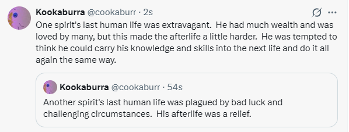
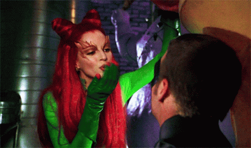

@dreamweaver.pl When the Queen invites Lucifer over for tea. Made by @Kling AI 3.0 — the best commercial-grade AI video model. Native 1080p output, built for brand storytelling, and professional film production. #klingai #Kling3 #Lucifer #devil #Queen ♬ Ritualistic - Perfect, so dystopian

@kibbyclip Follow for more 🎥🍿-Jane the virgin (2014) #janethevirgen #ivf #series #netflix #momsoftiktok ♬ original sound - Themoviegirly🇧🇷

Atheist Missionary Wonders If You Have A Few Minutes To Talk About Nothing https://t.co/F0sVKty8ZZ pic.twitter.com/C3eov8Q7Kw
— The Babylon Bee (@TheBabylonBee) April 16, 2026
From Wikipedia: "Muhammad"
"On 8 June 632, Muhammad died. In his last moments, he reportedly uttered:
'O God, forgive me and have mercy on me; and let me join the highest companions.'"
Wow. What an opening shot.
Scenario #984753039.3rt98:
The time is right for a smash hit. You know it. Your coworkers know it. The fans are gonna love it. You're gonna make a million bucks. The theme is going to be something wide-ranging, such as religion, but you'll make the product in a way that is perfectly ambiguous, which will gain the most customers - they won't be able to argue that the work is actually rebellious against religion. You're far left, but now you're swinging far right or at least it partially appears that way. What happens after this? The world continues to be a prison, but now you're the warden?